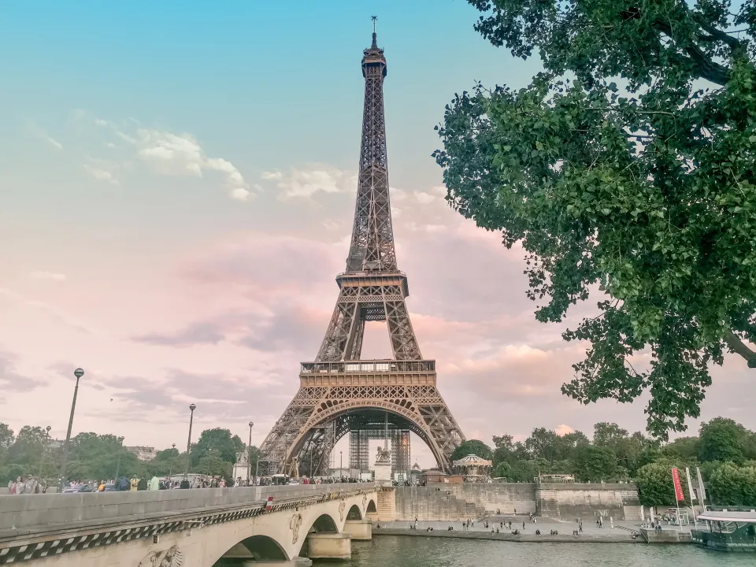
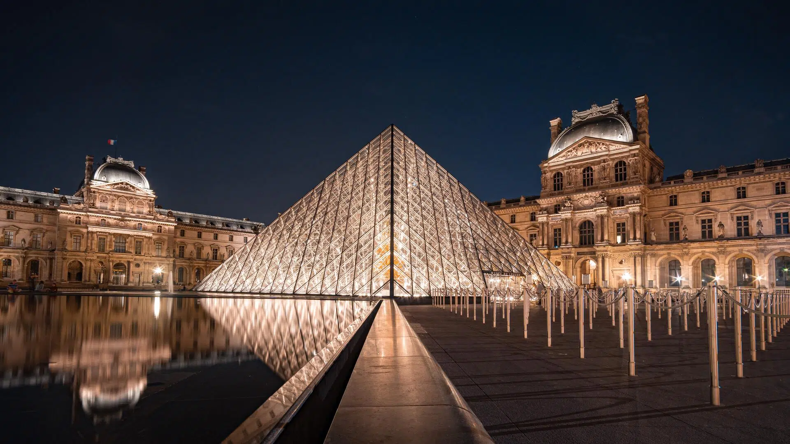
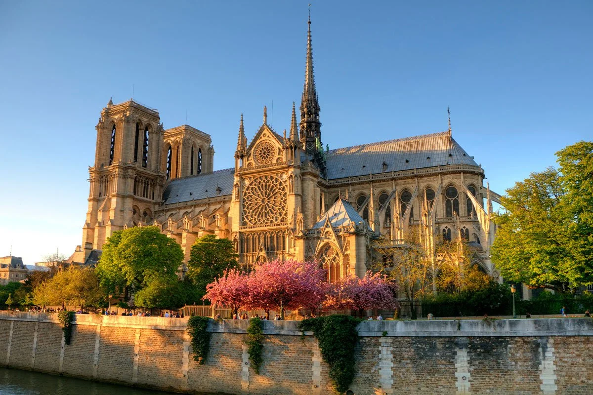
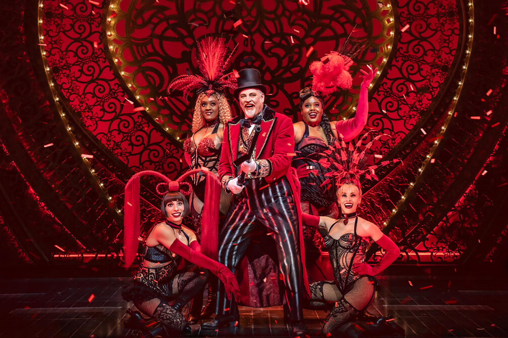
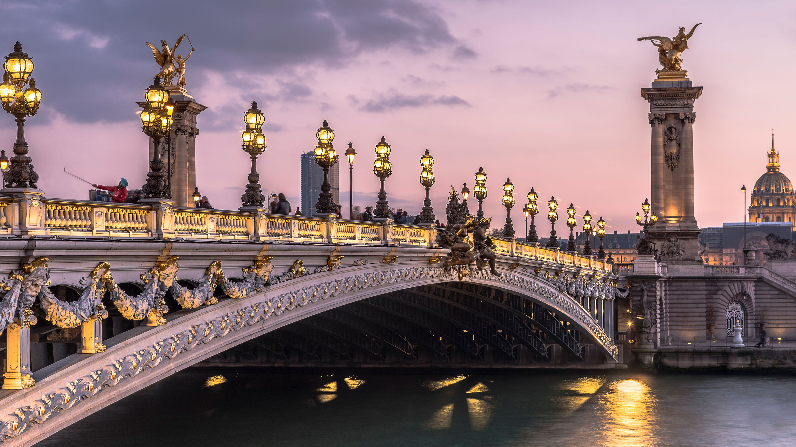
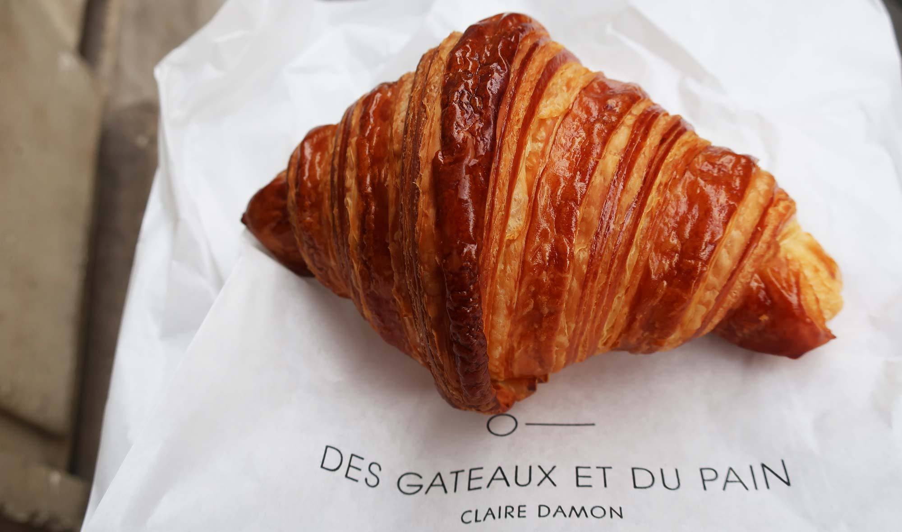
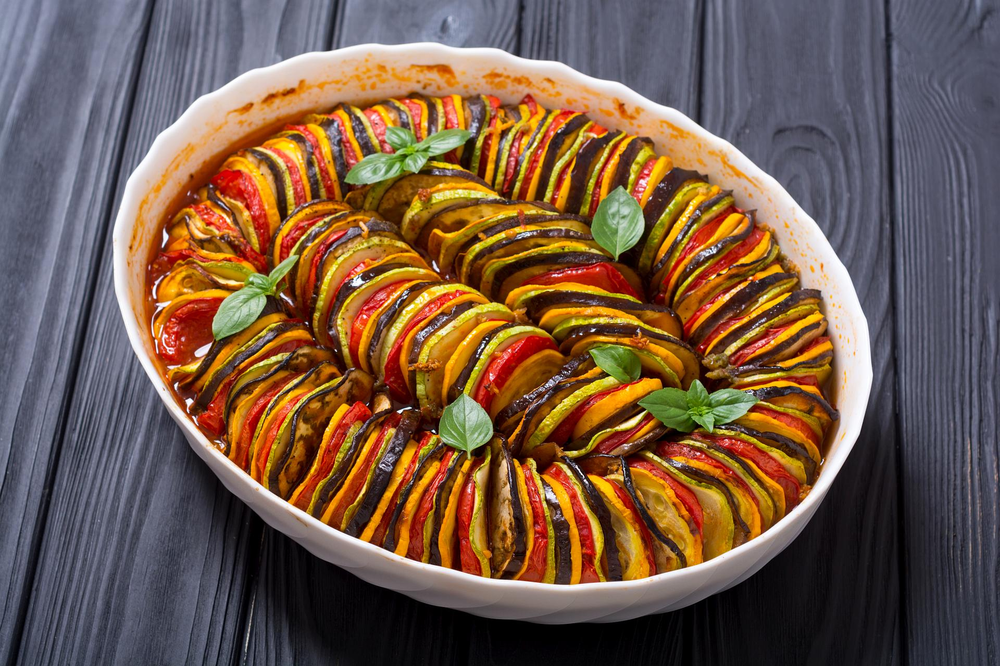
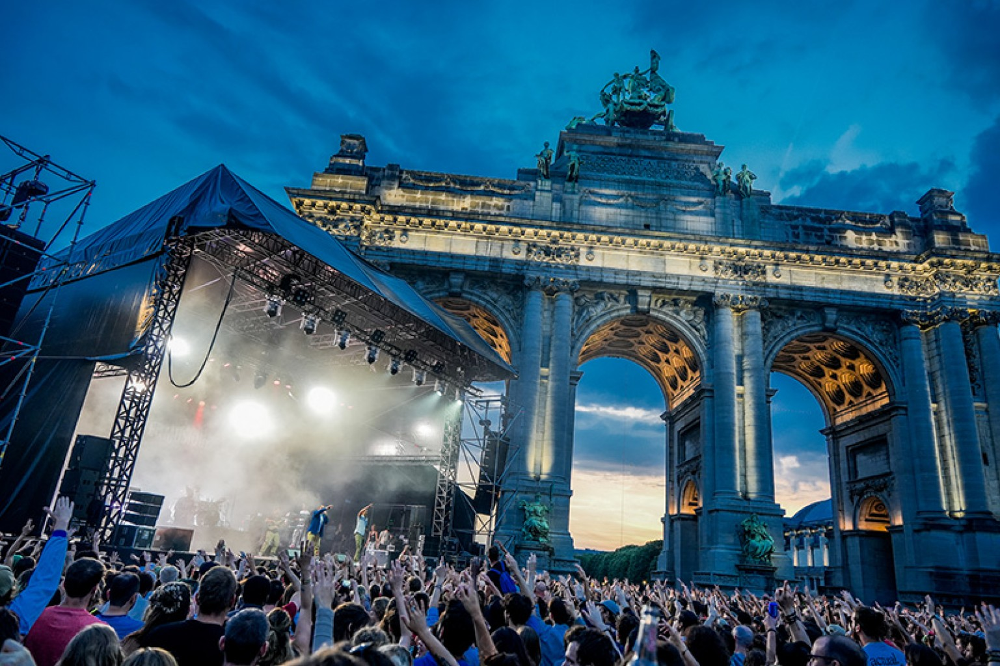

Prezentacja z najważniejszymi elementami Paryża
Wieża Eiffla
Wieża Eiffla jest jednym z najbardziej rozpoznawalnych punktów Paryża. Została zaprojektowana przez Gustave'a Eiffela i zbudowana na wystawę światową w 1889 roku. Wieża mierzy 324 metry wysokości i oferuje zapierające dech w piersiach widoki na całe miasto. Co roku odwiedza ją ponad 7 milionów turystów, co czyni ją jednym z najczęściej odwiedzanych zabytków na świecie.
Luwr
Luwr jest jednym z największych muzeów na świecie. Pierwotnie był to pałac królewski, który w 1793 roku został przekształcony w muzeum. Luwr posiada imponującą kolekcję ponad 380 000 dzieł sztuki, w tym słynną Mona Lisę Leonarda da Vinci. Muzeum odwiedza rocznie około 10 milionów osób, co czyni je najczęściej odwiedzanym muzeum na świecie.
Katedra Notre-Dame
Katedra Notre-Dame jest przykładem gotyckiej architektury sakralnej. Jej budowa rozpoczęła się w 1163 roku i trwała ponad dwa wieki. Katedra jest znana z charakterystycznych dwóch wież i przepięknych witraży. W 2019 roku katedra została poważnie uszkodzona przez pożar, ale prace renowacyjne trwają, aby przywrócić jej dawną świetność.
Łuk Triumfalny

Łuk Triumfalny jest symbolem francuskiego patriotyzmu. Został zbudowany na zlecenie Napoleona Bonaparte w 1806 roku, aby uczcić zwycięstwa jego armii. Łuk ma wysokość 50 metrów i jest ozdobiony licznymi rzeźbami oraz inskrypcjami upamiętniającymi poległych żołnierzy. Znajduje się na Placu Charles'a de Gaulle'a, na końcu słynnej alei Champs-Élysées.
Moulin Rouge
Moulin Rouge jest słynnym kabaretem, który stał się inspiracją dla wielu artystów. Otwarto go w 1889 roku w dzielnicy Montmartre, a jego charakterystycznym znakiem rozpoznawczym jest czerwony wiatrak. Moulin Rouge jest miejscem narodzin kankana, a jego kolorowe i ekstrawaganckie przedstawienia przyciągają turystów z całego świata.
Most Aleksandra III
Most Aleksandra III jest jednym z najpiękniejszych mostów w Paryżu, znany z bogato zdobionych latarni. Został otwarty w 1900 roku podczas wystawy światowej i nazwany na cześć cara Aleksandra III. Most łączy dzielnicę Champs-Élysées z dzielnicą Les Invalides i oferuje przepiękne widoki na Sekwanę oraz inne zabytki Paryża.
Kuchnia lokalna
Paryż słynie z wyśmienitej kuchni. Popularne potrawy to croissanty, bagietki, sery oraz wino. Croissanty, które można znaleźć w każdej piekarni, są symbolem francuskiego śniadania. Białe bagietki z chrupiącą skórką są podstawą każdego posiłku, a różnorodność serów i win zadowoli nawet najbardziej wymagających smakoszy.
Ratatouille to tradycyjne danie z Prowansji, które jest również popularne w Paryżu. Składa się z duszonych warzyw takich jak bakłażan, cukinia, papryka i pomidory, przyprawionych ziołami prowansalskimi. To proste, ale wyjątkowo smaczne danie jest doskonałym przykładem francuskiej sztuki kulinarnej.
Ciekawostki
W Paryżu znajduje się ponad 450 pomników i 150 muzeów. To miasto jest prawdziwą skarbnicą historii i kultury, przyciągając miłośników sztuki z całego świata.
Paryż nazywany jest "Miastem Świateł" ze względu na jego wiodącą rolę w epoce oświecenia oraz wcześnie wprowadzoną elektryczność na ulicach. Jego oświetlone nocą bulwary i zabytki tworzą niezapomniany widok.
Na paryskich ulicach codziennie jest sprzątanych około 900 ton śmieci. Miasto dokłada wszelkich starań, aby utrzymać swoje ulice czyste i przyjazne dla mieszkańców oraz turystów.
W Paryżu znajduje się 37 mostów nad Sekwaną, każdy z nich ma swoją unikalną historię i architekturę. Mosty te łączą różne części miasta, tworząc malownicze widoki.
Metro w Paryżu jest drugim najstarszym systemem metra na świecie, po londyńskim Underground. Otwarte w 1900 roku, metro paryskie jest jednym z najefektywniejszych środków transportu miejskiego, z siecią liczącą 16 linii i ponad 300 stacji.
Festiwal Muzyki
Fête de la Musique to coroczny festiwal muzyczny odbywający się 21 czerwca, podczas którego całe miasto zamienia się w jedną wielką scenę muzyczną. W tym dniu zarówno profesjonalni muzycy, jak i amatorzy, występują na ulicach, placach, w parkach i innych miejscach publicznych. Festiwal przyciąga tłumy i tworzy niezwykłą atmosferę, celebrując różnorodność muzycznych stylów i talentów.